 Latihan Soal
Home
Latihan Soal
Virtual Lab
Latihan Soal
1. Sumber energi utama fotosintesis adalah …
a. CO2
b. H2O
c. Cahaya matahari
d. Zat gula sederhana
2. Berikut ini merupakan bahan yang dibutuhkan oleh tumbuhan untuk proses fotosintesis, kecuali...
a. cahaya matahari
b. karbondioksida
c. karbohidrat
d. air
3. Amilum dibentuk dari zat gula sederhana hasil fotosintesis yang berupa...
a. Sukrosa
b. Glukosa
c. Pati
d. Bahan dinding
4. Suatu pigmen atau zat pada daun yang paling utama berperan dalam menangkap energi matahari adalah …
a. Klorofil
b. Karotenoida
c. Protein
d. karbohidrat
5. Faktor yang mempengaruhi fotosintesis di antaranya adalah...
a. Intensitas cahaya
b. Suhu
c. Gas O2 dan CO2
d. Semua benar
6. Sekelompok pigmen yang merupakan satu kesatuan alat penerima energi cahaya ini…
a. Klorofil
b. Fotosintesis
c. fotosistem
d. amilum
7. Fotosintesis menghasilkan zat sisa yang dilepas ke lingkungannya berupa …
a. O2
b. H2O
c. O2 dan H2O
d. Zat gula
8. Hasil fotosintesis berupa oksigen yang merupakan digunakan manusia dan hewan untuk proses?
a. pencernaan
b. pernapasan
c. pengeluaran
d. peredaran darah
9. Zat makanan glukosa hasil dari fotosintesis dapat diedarkan ke seluruh tumbuhan melalui?
a. Stomata
b. Zat hijau daun
c. Pembuluh tapis
d. Jaringan akar
10. Pada tahapan pembuatan makanan, tumbuhan hijau memerlukan zat pendukung selain cahaya matahari dan klorofil, yaitu?
a. Air dan Karbondioksida
b. Air dan Karbonmonoksida
c. Karbondioksida dan glukosa
d. Air dan oksigen
Javasript tidak mendukung atau tidak aktif di browser Kamu. Segera aktifkan javascript Kamu!
Kembali